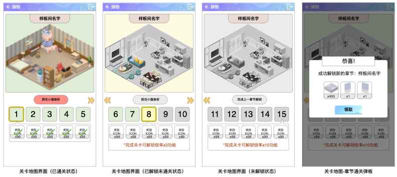
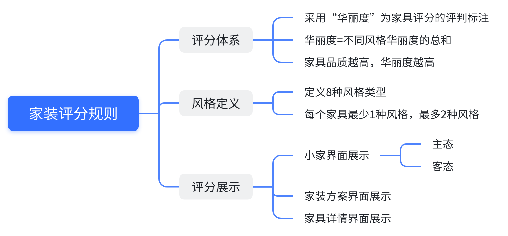
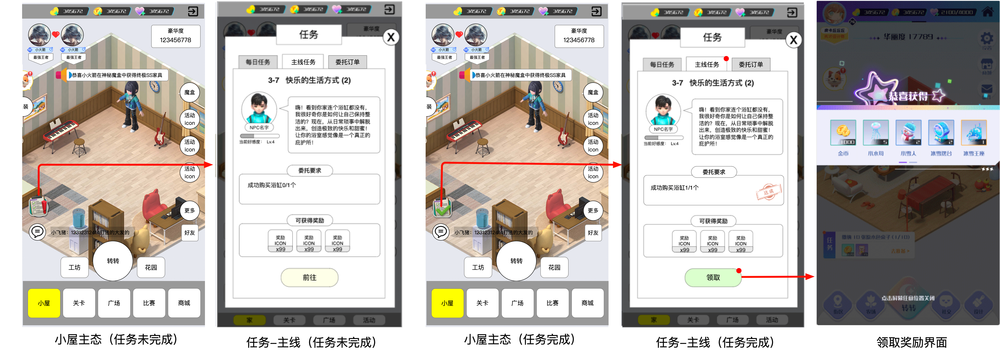
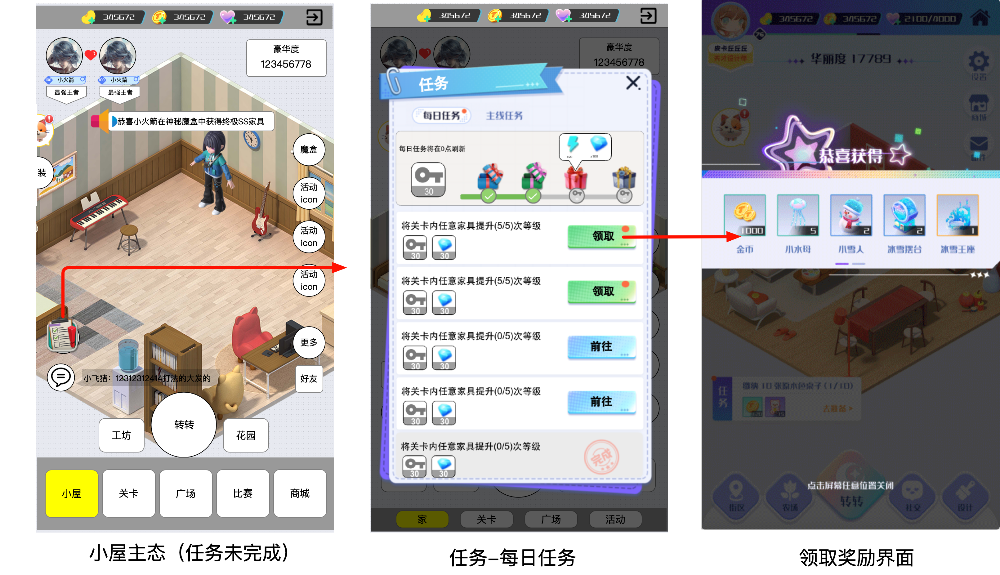
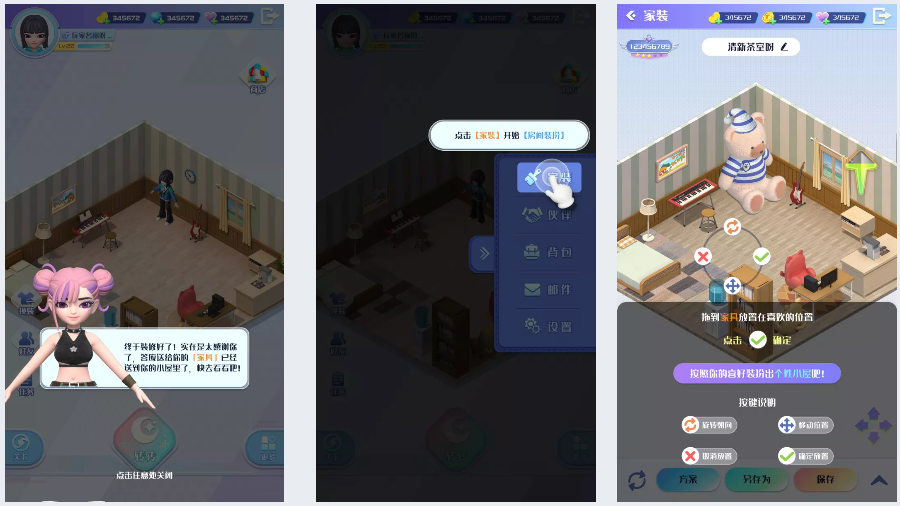
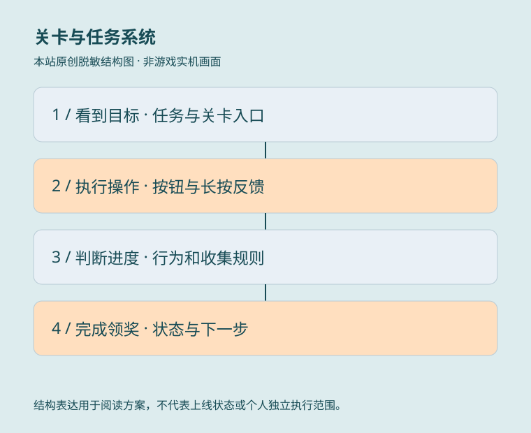

PROJECT JOURNAL / 设计资料摘要
派对星球.
关卡成长、任务目标与交互设计。
GAMEPLAY / SYSTEM / UI·UE · TT 趣丸
关卡、任务与新手体验
以转盘、家具收集和小屋装扮连接成长，用主线、每日任务和分阶段引导建立游玩目标。我的任职角色：高级系统策划，2021.12—2022.07。
以下五份文档的修订表明确记录负责人“吴天昊”，据此说明文档创建、规则和交互修订贡献，不认定全部玩法、程序与美术均由个人独立完成；美术执行由团队相关岗位承担。资料使用“派对总动员”等阶段性名称，按用户指定的 TT 项目资料接入履历中的《派对星球》，不据此宣称正式更名。历史方案、数据目标及示例数值不作为上线证明或实际业绩。
有修订记录支持的策划资料
修订表负责人：吴天昊；创建文档、关卡地图 UE、横向布局与引导流程更新。
修订记录 2022.05—2022.06
修订表负责人：吴天昊；评分设计、规则补充与 UE 布局调整。
修订记录 2021.12—2022.03
修订表负责人：吴天昊；创建文档及格式修订。
修订记录 2022.02—2022.03
修订表负责人：吴天昊；创建文档、界面 UE 与详细规则补充。
修订记录 2022.04
修订表负责人：吴天昊；创建文档、需求概述与图例化说明补充。
修订记录 2022.05—2022.06
章节地图与家具收集状态

《「关卡」关卡玩法优化方案》图 9 关卡地图参考 · 原始嵌入参考设计问题
怎样让玩家从关卡编号理解章节成长、家具解锁以及下一步可做什么？
文档产出
修订记录包含地图 UE、横向布局与引导流程更新。文档同时说明转盘长按反馈、倍率提示、资源条及界面切换；这里只展示状态与交互，具体配置和概率不公开。
关键方案
- 以样板间组织章节，将家具点亮程度与关卡进度结合，区分已完成、已解锁未完成及未解锁三类状态。
- 地图由纵向调整为横向浏览，支持拖动与左右按钮；默认定位到当前章节，并显示奖励详情。
- 关卡按钮区分已完成、当前、未完成和选中状态；样板间解锁后可跳到小屋家装并应用家具预设。
- 通关后按领奖、分享、章节解锁与新关卡点亮顺序反馈；首次引导屏蔽重复章节领奖和全屏刷新表现。
在页面内阅读章节地图与家具收集状态大图
家装评分与主客态展示

《「家装」家装评分系统设计》家装评分规则导图 · 原始嵌入参考设计问题
如何把家具收集与布置变成可理解的成长目标，同时保持编辑和拜访中的数据一致？
文档产出
文档覆盖规则导图、评分展示、编辑反馈、主客态同步及界面需求，修订表记录了规则与 UE 布局调整；不公开内部评分档位配置。
关键方案
- 以家具风格属性形成华丽度总分；常规家装看总分，评分玩法按所要求的风格显示对应数值。
- 摆放或撤回家具、切换方案时即时更新编辑分数，并用增加或减少的反馈表达变化。
- 主态保存方案后计算并提交评分，刷新展示；客态拜访时读取对方评分和家具状态，不要求实时追踪所有变化。
- 评分详情、家具详情与方案窗口承担不同信息层级，避免只给一个总分却无法解释来源。
在页面内阅读家装评分与主客态展示大图
主线任务的判定与目标引导

《「任务系统」主线任务》任务界面流程参考 · 原始嵌入参考设计问题
怎样把家装、关卡和社交行为串成线性目标，并避免计数起点与任务状态含糊？
文档产出
修订表记录本人创建与修订任务文档。任务体系用家装、关卡等功能作为目标对象，不表示这些外围系统全部由本人独立设计。
关键方案
- 任务判断区分行为事件与收集进度；收集任务再区分注册以来累计、任务开始后累计两个计数起点。
- 完成前一任务解锁后续任务；未达成显示前往，达成后显示领取，并以进度提示和红点承接状态变化。
- 任务面板优先定位到有奖励可领取的页签；各页签提示全部解除后才清除主入口红点。
- 任务条件按类型和条件组织，并记录入口、目标完成、领奖与跳转事件，便于检查引导路径。
在页面内阅读主线任务的判定与目标引导大图
每日任务、排序与阶段奖励

《「任务系统」每日任务》任务与阶段奖励参考 · 原始嵌入参考设计问题
每天的短目标如何与长期系统学习衔接，并让任务与礼包的领取状态保持清晰？
文档产出
修订表明确记录本人创建文档、修改界面 UE 并补充详细规则；任务数量、奖励数值和达成率目标不当作线上数据或个人业绩。
关键方案
- 任务完成获得资源与任务点数，点数累计到阶段礼物；服务器固定时间刷新，初期任务可按教学需要固定安排。
- 区分前往、领取和已领取状态；排序优先可领取，其次未完成，最后已完成，领完后置灰下沉。
- 阶段礼物区分待领取与已领取；奖励气泡随位置调整指向，支持查看下一级奖励。
- 任务跳转读取目标配置，进度和按钮随行为更新；入口、领奖和阶段礼物分别记录事件。
在页面内阅读每日任务、排序与阶段奖励大图
分阶段引导与中断处理

《新手引导 CB4版》剧情对话、操作引导与展示面板 · 原始嵌入参考设计问题
第一次进入怎样让玩家理解核心价值，并避免把所有系统操作一次性堆给新用户？
文档产出
CB4 记录了本人创建、需求概述与图例说明补充；文档也注明了其他岗位负责的开发事项，本站不扩大个人责任或展示未验证的引导通过率。
关键方案
- 先介绍角色、小屋、转盘与家具成长，再分阶段教学家装换装、拜访互动、小屋升级和派对参与。
- 区分剧情对话、遮罩操作、功能图例及弱引导，图例有行动按钮时跳到对应功能，没有按钮时可关闭。
- 文档并列讨论中断后跳过上一步或恢复中断界面的两种方案，不将其表述为已确定的唯一实现。
- 逐步定义点击、触达完成、相邻步骤停留时长、加载与启动事件，用于定位理解或流程中的流失点。
在页面内阅读分阶段引导与中断处理大图
INTERFACE REFERENCES / 团队协作资料
从交互规则到界面表现
左图是关卡优化案明确标为“原图未修改”的转盘已有界面，右图是 CB4 美术需求中的护盾教学参考。图示用于说明信息层级、按钮状态和功能解释，不作为本人绘制作品或最终上线截图。
交互交付
转盘界面需要区分点击、长按自动、资源不足等按钮状态，关卡与小屋入口保持明确；教学图将护盾作用用房间和屏障说明，再通过确认按钮返回游玩。
公开范围
图片中昵称、资源、等级和奖励按历史设计示例理解，不作为真实玩家数据。完整内部文档、产出表、经济配置与其他负责人方案不公开，也不归为个人独立成果。
DESIGN JOURNAL / 方案摘要
项目方案.
读背景、职责、方案与可证实产出。

关卡与任务系统 · 本站原创脱敏结构图PROJECT / 工作说明关卡与任务系统
项目背景
关卡、转盘、目标提示和任务系统需要形成连贯的游玩路径。
本人职责
两份文档的创建与修改记录署名吴天昊，确认关卡交互优化与主线任务方案工作。
关键方案
整理按钮按下与长按自动反馈、倍率解锁提示、地图布局和新手路径；主线任务区分行为与收集判定，明确跳转、红点与领奖状态。
可证实产出
形成版本化优化需求、主线任务规则与状态反馈说明。文档中的留存和参与率是目标，不作为已达成业绩。
摘要依据：《关卡玩法优化方案》《主线任务》署名更新记录，2022年。本站原创交互结构图；不展示内部配置、概率、奖励数值和数据目标。
放大流程图 ↗ 在页面内阅读流程图＋
可滚动阅读大图；也可打开流程图缩放。下方文字提供同等内容。